action { batter -> BB }
/* On the next batter, the runner steals second base. The catcher, seeing the steal, throws the ball back to second base makes a throwing error. */
action { runner1 -> SB e2T }

Now that we have seen how the rules describe the circumstances in which the Official Scorer should score an error, we shall show how they should be recorded on the score-sheet.
Example 44: The runner sets off to steal second base and comes to rest at third base thanks to a throwing error by the catcher. Charge an extra base throwing error to the catcher for having enabled the runner to advance to third.
| WBSC | Translation in the scoring tool | Tool |
|---|---|---|
|
|
/* The first batter reaches first base on 'base on ball' */ action { batter -> BB } /* On the next batter, the runner steals second base. The catcher, seeing the steal, throws the ball back to second base makes a throwing error. */ action { runner1 -> SB e2T } |
|
Example 45:
The batter hits a foul fly which is dropped by the first baseman. Charge a decisive fly ball error to the first
baseman for having allowed the batter-runner to return to bat.
The error is noted in one corner of the first base square, leaving room for any further notes about the
batter.
| WBSC | Translation in the scoring tool | Tool |
|---|---|---|

|
/* The batter hits a fly in the foul zone. The first baseman tries to catch the ball
but makes a mistake by dropping it. */ action { batter -> EF3 } |
Example 46: The batter hits a ground ball to the first baseman who, after having recovered the ball, despite having the opportunity, fails to tag the base, thus allowing the batter to reach base safely. Charge a decisive fielding error to the first baseman for failing to put out the batter-runner.
| WBSC | Translation in the scoring tool | Tool |
|---|---|---|
|
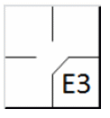 |
/* The batter hits a ground ball toward third base. The third baseman releases the
ball, and the batter makes it to third base safely. */ action { batter -> E3 } |
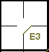 |
Example 47: The batter hits a fly ball to the outfield. The right fielder muffs the catch, enabling the batter-runner to reach first base. Charge a decisive catching error to the right fielder for having failed to put out the batter-runner.
| WBSC | Translation in the scoring tool | Tool |
|---|---|---|

|
/* The batter hits a fly to right field. The right-fielder catches the ball on the
fly and drops it */ action { batter -> E9F } |
Example 48:
The batter hits a ground ball to the shortstop, who recovers the ball in time to put out the batter-runner,
but bungles his throw to first base, enabling him to advance to second. Charge a decisive throwing error to the
short stop for having failed to put out the batter-runner. Write the error on first base and an arrow to the finally
reached base (in this case second base).
NOTE: Record one error for the two-base advance.
| WBSC | Translation in the scoring tool | Tool |
|---|---|---|
|
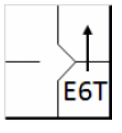 |
/* The batter hits a ball towards the shortstop, who catches it but misses his
throw. The batter capitalizes on the error to reach second base */ action { batter -> E6T+ } |
Example 49:
With a runner on first base the batter hits a ground ball to the shortstop, who recovers it in time to put out
the runner and throws to second base.
The second baseman, who had moved quickly to cover second base, fails to catch the ball, allowing both runners to
reach base safely. Charge a decisive fielding error to the second baseman for having failed to put out the runner, and
credit the shortstop with an assist.
| WBSC | Translation in the scoring tool | Tool |
|---|---|---|

|
/* The first batter wins first base on a 'base on ball' */ action { batter -> BB } /* The second batter hits a ball to the shortstop, which catches the ball and throws it to the second baseman to get the runner out. The second baseman releases the ball, and the runner is safe at second base. */ action { batter -> O6 , runner1 -> 6E4 } |
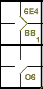 |
Example 50:
With a runner on first base the batter hits to the second baseman, who lets the ball pass between his legs.
The batter-runner reaches first base and the runner advances to third.
Charge a decisive catching error to the second baseman for having failed to put out the batter-runner and allowed
the runner to reach third base.
NOTE: Record just one error, which allowed two runners to advance one or more bases.
| WBSC | Translation in the scoring tool | Tool |
|---|---|---|
|
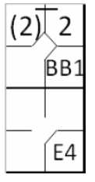 |
/* The first batter wins first base on a 'base on ball' */ action { batter -> BB } /* The second batter hits a ball toward the second baseman, who lets it go. The runner scores first on the hit and capitalizes on the error to reach third. */ action { batter -> E4 , runner1 -> + (2) } |

|
Example 51:
With batter number 3 at bat, the runner on first base sets off to steal second. The catcher makes an excellent
throw to second base in ample time to put out the runner. Strangely, neither the second baseman nor the shortstop
goes to cover second base, allowing the runner to steal the base.
The official scorer may ask the coach of the defending team which of the two fielders should have gone to the
base (in this case, the second baseman). Charge a decisive fielding error to the second baseman for having failed to
put out the runner, and credit an assist to the catcher. Charge a caught stealing both to the catcher and to the
runner.
| WBSC | Translation in the scoring tool | Tool |
|---|---|---|

|
/* The first batter wins first base on a 'base on ball' */ action { batter -> BB } /* The runner attempts to steal second base and would have failed if the second baseman hadn't made a mistake. */ action { runner1 -> CS2E4 } |
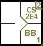 |
Example 52:
With a runner on first base, the batter hits a single to the center fielder, allowing the runner to reach
second base.
The center fielder throws to third base to stop the runner from advancing. The runner between second and third
is trapped. The rundown is prolonged for a time, with the participation of several fielders.
Finally the shortstop makes a bad throw over third base and the runner takes the opportunity to score a run.
The batter-runner uses the opportunity to reach second.
Charge a decisive throwing error to the shortstop, for having allowed the runner to score, and an assist to each
fielder who took part in the play.
| WBSC | Translation in the scoring tool | Tool |
|---|---|---|
|
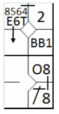 |
/* The first batter wins first base on a 'base on ball' */ action { batter -> BB } /* The second batter hits a hit to center field, the runner on first wins second. This runner tries to take third as well and succeeds on a shortstop error; the batter-runner takes advantage of the opportunity to take second. */ action { batter -> 1B8 O8 , runner1 -> + 8564E6T+ } |
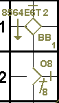 |
Example 53:
With a runner on first base the batter hits a single to the center field, enabling the runner to reach third base.
The center fielder throws to the third baseman to halt the advance of the runner to that base.
The batter-runner takes this opportunity to run to second. However, the ball makes an unnatural bounce and the
defense loses control of the ball. Realizing this, the runner on third base runs in.
Charge an extra base throwing error to the center fielder for having allowed the opposing team to score.
| WBSC | Translation in the scoring tool | Tool |
|---|---|---|

|
/* The first batter wins first base on a 'base on ball' */ action { batter -> BB } /* The second batter hits a hit to center field, and the runner on first base gains two bases. The center fielder throws to the catcher but makes a throwing error, and the runner on third base scores. The runner on first base capitalizes on the ensuing throw to advance to second. */ action { batter -> 1B8 T85 , runner1 -> ++ e8T } |

|
Example 54:
With a runner on first and second base and no outs, the batter hits an infield fly for which he is called out.
As the ball dropped by an error of the shortstop, the lead runner takes advantage of the error and advances one
base.
Charge an extra base catching error to the shortstop for having allowed the runner to advance.
| WBSC | Translation in the scoring tool | Tool |
|---|---|---|

|
/* The first batter hits a double to center field */ action { batter -> 2B8 } /* The second batter wins first base on a 'base on ball' */ action { batter -> BB } /* The third batter hits a bell in the infield, the umpire calls an infield fly: the batter is out. The shortstop drops the ball, and the runner on second takes advantage to reach third base. */ action { batter -> OBR8-6 , runner2 -> e6 } |

|
Example 55:
With a runner on second base the batter hits a single and the runner reaches third base and continues towards
the home plate.
The third baseman intervenes and tries to impede his progress. The umpire awards the runner a base for obstruction.
If the official scorer deems the obstruction to have been a determining factor in scoring the run he should
record the run as shown in the example. Charge an extra base error to the third baseman for having committed the
obstruction.
| WBSC | Translation in the scoring tool | Tool |
|---|---|---|
|
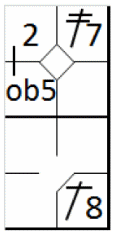 |
/* The first batter hits a double to left field */ action { batter -> 2B7 } /* The second batter hits a hit to center field, and the runner on second capitalizes to reach third base. The fielder attempts to interfere with the runner, who is now at third base, resulting in an obstruction. */ action { batter -> 1B8 , runner2 -> + ob5 } |

|
Example 56: If, however, the official scorer considers that the runner would have scored regardless of the obstruction, he should record the action as given to the right.
| WBSC | Translation in the scoring tool | Tool |
|---|---|---|

|
/* The first batter hits a double to left field */ action { batter -> 2B7 } /* The second batter hits a toe to center field, and the runner on second capitalizes to reach third base. The fielder tries to interfere with the runner reaching third, but there is no interference. */ action { batter -> 1B8 , runner2 -> ++ } |
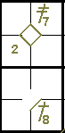 |
Example 57:
Fly ball between the left fielder and center fielder. Both run to the ball, the left fielder catches it but
the center fielder knocks him over, making him drop the ball. The batter-runner reaches first base.
Charge a decisive fly ball error to the center fielder for having prevented the left fielder from making
the putout.
| WBSC | Translation in the scoring tool | Tool |
|---|---|---|
|
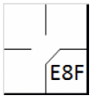 |
/* The lead batter hits a fly ball between left and center field. The left fielder
catches the ball, but the center fielder shoves him, causing him to drop it. */ action { batter -> E8F } |

|
Example 58:
The batter hits a ground ball to the shortstop who fumbles the grounded ball, although in the judgment of the
official scorer he would have had time to throw to first base.
He recovers the ball and throws to first anyway, making a bad throw and enabling the batter-runner to advance
another base.
Charge the shortstop with two errors: one decisive error and one extra base error, the first a fielding error
and the second a throwing error, as the batter-runner reached each of the two bases on a different error.
| WBSC | Translation in the scoring tool | Tool |
|---|---|---|

|
/* The batter hits a ground ball to the shortstop who fumbles the grounded ball,
although in the judgment ofthe official scorer he would have had time to throw to first base. He recovers
the ball and throws to first anyway, making a bad throw and enabling the batter-runner to advance another
base */ action { batter -> E6 e6T } |
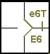 |
Example 59:
With batter number 3 at bat, the runner on first sets off to steal second but is anticipated by a throw from the
catcher to the second baseman who, although he would have had time to make the putout, muffs the catch. The runner sees
this and, after having reached second, continues to third. The second baseman recovers the ball and throws it to the
third baseman, who makes the putout.
Charge a decisive fielding error to the second baseman, who missed the catch, and credit the third baseman with
a putout, and the catcher and second baseman with an assist. Credit a caught stealing both to the catcher as well as to
the runner.
| WBSC | Translation in the scoring tool | Tool |
|---|---|---|
|
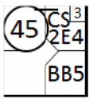 |
/* The first batter wins first base on a 'base on ball' */ action { batter -> BB } /* He then attempts to steal the base, and without the second baseman's mistake, he would have been put out. He takes advantage of the error to try to reach third base, but he is put out by the third baseman with the help of the second baseman. */ action { runner1 -> CS2E4 45 } |

|
Example 60:
With a runner on first base, the batter hits a fly ball to the left field. The left fielder fails to catch the
ball, enabling the runner to reach third base. The batter-runner sees the error and tries to reach second, but is put
out by the second baseman on an assist by the left fielder.
Charge a decisive fly ball error to the left fielder for having enabled the batter-runner to reach first base,
and credit an assist to the left fielder and a putout to the second baseman.
| WBSC | Translation in the scoring tool | Tool |
|---|---|---|

|
/* The first batter hits a single to left field */ action { batter -> 1B7 } /*The second batter hits a fly to left field, and the fielder makes a mistake by dropping the ball. The runner on first base capitalizes, reaching two bases. The batter then advances to second but is put out by a throw from left field to second. */ action { batter -> E7F 74 , runner1 -> (2)+ } |
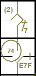 |
Example 61:
With a runner on second base, the batter hits a fly ball to the center fielder, who muffs the catch.
The runner is put out by the third baseman on an assist by the center fielder as he runs to third base.
Charge a decisive fly ball error to the center fielder for having allowed the batter-runner to reach first
base, and credit an assist to the center fielder and a putout to the third baseman.
| WBSC | Translation in the scoring tool | Tool |
|---|---|---|

|
/* The first batter hits a double to right field */ action { batter -> 2B8 } /* The second batter hits a fly to center field, and the fielder makes a catch error. The runner then tries to reach third base but is put out by the third baseman assisted by the center fielder. */ action { batter -> E8F , runner2 -> 85 } |

|
Example 62:
The batter hits a single to the center fielder who, while trying to field the ball, muffs it and allows the
batter-runner, who has already reached second base, to continue to third. In the meantime the left fielder, running
to cover, recovers the ball and assists the third baseman, who makes the putout.
Charge an extra base fielding error to the center fielder for having allowed the batter-runner to reach second
base and credit an assist to the left fielder and a putout to the third baseman.
| WBSC | Translation in the scoring tool | Tool |
|---|---|---|
|
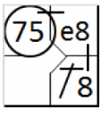 |
/* The lead batter hits a hit to center field. The center fielder misses the ball,
and the running back capitalizes to reach second base. He attempts to reach third but is put out by the third
baseman, assisted by the left fielder. */ action { batter -> 1B8 e8 75 } |

|
Example 63:
With batter number 3 at bat, the catcher, after having caught the pitch, throws to first base to try to pick
the runner off base, but the first baseman drops the ball from his glove, thus failing to make the putout.
Charge a decisive fielding error to the first baseman for having failed to put out the runner, and credit
an assist to the catcher.
| WBSC | Translation in the scoring tool | Tool |
|---|---|---|
|
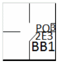 |
/* The first batter reaches the first base on a 'Base on ball' */ action { batter -> BB } /* The runner should have been pulled on pick-off were it not for the first baseman's mistake */ action { noAdvance on runner1 -> PO2E3 } |
Example 64:
With batter number 3 at bat and a runner on first base, the catcher calls for a pitchout and quickly throws
to first base, but bungles the throw, allowing the runner to reach second base.
Charge an extra base throwing error to the catcher.
| WBSC | Translation in the scoring tool | Tool |
|---|---|---|

|
/* The first batter reaches the first base on a 'Base on ball' */ action { batter -> BB } /* The runner scores second base on a pick-off thanks to the catcher's poor throw. */ action { runner1 -> POe2T } |
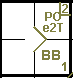 |
Example 65:
The catcher fails to catch the third strike and recovers the ball but bungles his attempted assist to
first base.
Charge a decisive throwing error to the catcher for having failed to make the putout, and credit the
pitcher as well as the batter with a strikeout.
| WBSC | Translation in the scoring tool | Tool |
|---|---|---|
|
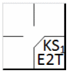 |
/* Third strike called, the catcher recovers the ball but makes a throwing error */ action { batter -> KSE2T } |

|
Example 66:
The catcher fails to catch the third strike, recovers the ball and throws to the first baseman, who muffs
the catch.
Charge a decisive fielding error to the first baseman for having failed to make the putout and credit an
assist to the catcher and a strikeout to the pitcher.
| WBSC | Translation in the scoring tool | Tool |
|---|---|---|
|
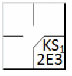 |
/* Third strike released, the catcher recovers the ball, throws it to the first
baseman who doesn't control it */ action { batter -> KS2E3 } |

|
Example 67: With a runner on third base and less than two out, the batter-runner hits a foul fly which is dropped by the left fielder. If the official scorer deems the action is not intentional, to prevent a run being scored, he should charge a (decisive) error against the left fielder for having allowed the batter-runner to return to the batter’s box.
| WBSC | Translation in the scoring tool | Tool |
|---|---|---|
|
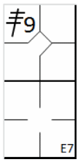 |
/* The first batter hits a triple to right field */ action { batter -> 3B9 } /* The second batter hits a fly ball into the foul zone. The left fielder could have caught it in flight but makes a mistake. */ action { batter -> E7F } |

|
Only two types of error may, if committed, result in the award of a grounded into double play.
NOTE: There must be no doubt as to the dynamics of the errors described above, before a grounded into double play is charged against the batter, in the absence of two putouts. If not, it is not to be considered a double or triple play.
In the following eight examples, which all begin with the same initial situation, the action in question results in different outcomes according to the different defensive plays made.
NOTE: In all of the following eight examples, with the exception of number 73 and 75, although there were not actually two putouts, a grounded into double play is always charged against the batter.
Example 68:
With a runner on first base, the batter hits a ground ball to the shortstop, who assists the second baseman
in putting out the runner.
The second baseman throws to first, but the first baseman muffs the catch and the umpire, after having called
out the runner, declares the batter safe.
As the umpire called “Out safe”, charge a fielding error to the first baseman.
| WBSC | Translation in the scoring tool | Tool |
|---|---|---|

|
/* The first batter arrives on base on a 'base on ball' */ action { batter -> BB } /* The batter hits a ground ball toward the second baseman. The second baseman throws the ball back to the shortstop to put out the runner. The shortstop throws the ball back to the first baseman, who could have put out the batter had he secured the ball. */ action { batter -> GDP4E3 , runner1 -> 46 } |

|
Example 69:
Same situation as in the previous example, but the shortstop, after having recovered the ball, overruns
second base and assists the first baseman in time to make the putout.
As the shortstop missed second base, charge him with a decisive error.
| WBSC | Translation in the scoring tool | Tool |
|---|---|---|
|
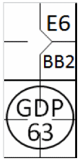 |
/* The first batter arrives on base on a 'base on ball' */ action { batter -> BB } /* The second batter hits a ground ball toward the shortstop, who fails to catch it. Without this error, the runner would have been out. The shortstop throws the ball to the first baseman to get the batter out. */ action { batter -> GDP63 , runner1 -> E6 } |

|
Example 70:
Still with the same situation, both misplays, by the shortstop and by the first baseman, are made.
In this case, two errors are charged
| WBSC | Translation in the scoring tool | Tool |
|---|---|---|

|
/* The first batter arrives on base on a 'base on ball' */ action { batter -> BB } /* The second batter hits a ground ball toward the shortstop, who fails to catch it. Without this error, the runner would have been out. The shortstop throws the ball to the first baseman, who releases it, and the batter/runner is safe. */ action { batter -> GDP6E3 , runner1 -> E6 } |

|
Example 71:
In this example, both offensive players are retired, but the second baseman drops the ball (thrown by the
shortstop) after having tagged second base, then recovers it in time to retouch the base and assist the first
baseman in putting out the batter-runner.
The error, while not decisive, does not cancel out the assist by the shortstop.
| WBSC | Translation in the scoring tool | Tool |
|---|---|---|

|
/* The first batter arrives on base on a 'base on ball' */ action { batter -> BB } /* The second batter hits a ground ball toward the shortstop, who fails to catch it. Despite the error, he manages to relay the ball to the second baseman to get the runner out. The second baseman then relays the ball to the first baseman, and the batter/runner is out. */ action { batter -> GDP43 , runner1 -> 64 } |

|
Example 72:
Both offensive players are put out. The second baseman tags the base after having fielded the batted ball and
throws to first base, but the first baseman drops the ball, then recovers it in time to put out the batter-runner.
Despite the misplay, the first baseman recovers the ball and thereupon proceeds to force out the batter-runner,
which ultimately leads to the double play.
| WBSC | Translation in the scoring tool | Tool |
|---|---|---|

|
/* The first batter arrives on base on a 'base on ball' */ action { batter -> BB } /* The second batter hits a ground ball toward the second baseman, who catches it and touches his base, putting the runner out. He throws the ball back to the first baseman, who drops it but catches it in time to put the batter out. */ action { batter -> GDP43 , runner1 -> 4 } |

|
Example 73:
With a runner on first base, the batter hits a ground ball to the shortstop, who throws to second and
puts out the runner.
The second baseman then throws to first but muffs the throw, enabling the batter-runner to reach second.
Charge an extra base throwing error to the second baseman for having allowed the batter-runner to reach second.
Remember that in no case should an error be charged against the fielder for the batter-runner reaching first base,
even if, in the opinion of the official scorer, he could have made the putout, as the throw was made to complete a
double play.
| WBSC | Translation in the scoring tool | Tool |
|---|---|---|
|
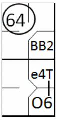 |
/* The first batter arrives on base on a 'base on ball' */ action { batter -> BB } /* The second batter hits a ground ball toward the shortstop, who throws it to the second baseman, who puts the runner out. The second baseman misses his throw to the first baseman. The batter/runner takes advantage and reaches second base. */ action { batter -> O6 e4T , runner1 -> 64 } |

|
Example 74: With a runner on first base, the batter hits a ground ball to the shortstop, who assists the second baseman in putting out the runner. The second baseman throws to first where the first baseman muffs the catch. The batter-runner is put out at second base after the error by the first baseman. This is not a defensive double play.
| WBSC | Translation in the scoring tool | Tool |
|---|---|---|
|
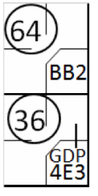 |
/* The first batter arrives on base on a 'base on ball' */ action { batter -> BB } /* The batter hits a ground ball toward the shortstop, who catches it and throws it to the second baseman to get the runner out. The fielder throws the ball to the first baseman, who releases the ball. The batter/runner tries to reach second but is put out */ action { batter -> GDP4E3 36 , runner1 -> 64 dontCountAsDoublePlay } |

|
Whether to charge the DP or not is best seen in the following
Example 75:
Runner on first and less than two outs. The batter hits the ball to the shortstop who in turn throws the
ball to the second baseman and the runner is forced out. The second baseman throws to first base to put out the
batter, but the throw is wild and the batter is safe. Seeing the ball get away from the first baseman, the
batter-runner advances to second base (on the throwing error). By that time the right fielder gets the ball and
throws to second base to put out the runner. Although two put outs were made in succession, no double play is scored
due to the intervening error.
| WBSC | Translation in the scoring tool | Tool |
|---|---|---|
|
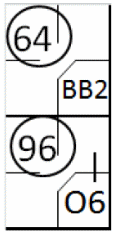 |
/* The first batter arrives on base on a 'base on ball' */ action { batter -> BB } /* The batter hits a ground ball toward the shortstop, who catches it and throws it to the second baseman to get the runner out. The fielder throws it to the first baseman, who releases the ball, but it's too late. The batter tries to reach second base but is put out. */ action { batter -> O6 96 , runner1 -> 64 dontCountAsDoublePlay } |
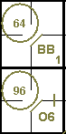 |
ATTENTION: Record in the “notes” on the score report the reason for the lack of a double play line (Examples 74 and 75).